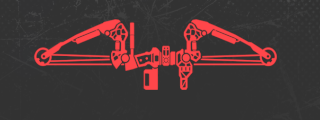
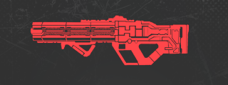
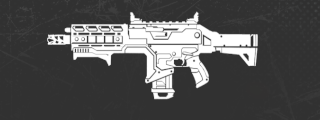
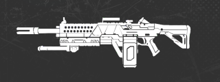
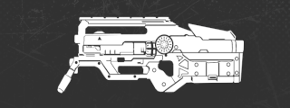
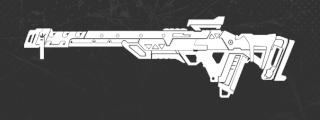
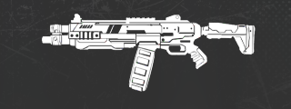
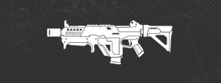
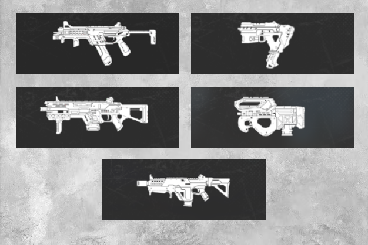

⬇ シーズン25の武器調整情報をまとめました!! ⬇
武器調整
ボセック（通常武器化）

- ・スナイパーアーセナルでも見つけることができる
- ・スナイパーストックをアタッチメントとして追加できる
- ・ケアパッケージ武器と似た仕様で、専用の40本のアローを使用
- ・環境に放たれたアローは回収して弾薬を補充することができる
- ・プレイヤーに放たれたアローはデスボックスの上から最大4本まで回収できる
- ・アローは拾うアイテムとして見つけることはできない
- ・最大チャージダメージを75から55に減少
- ・発射速度が減少
- ・シャッターキャップを削除
- ⚪︎フラググレネードを使ってボセックにエネルギーを与え、エクスプローシブアローを使うことができる
- ・エクスプローシブアローを放つには、弓を完全に引かないといけない
- ・エクスプローシブアローは環境やプレイヤーに突き刺さる
- ・エクスプローシブアローの命中ダメージを40に減少（ヘッドショット: 64）
- ・エクスプローシブアローは半径5mの範囲で爆発し、2秒後に25の追加ダメージを与える
ハボック（通常武器化）

- ・ダメージが21から19に減少
- ・腰だめ発射の拡散率を増加
- ・リコイルを増加
- ・セレクトファイアを削除
ヘムロック

- 以前のホットフィックス:
- ・ヘッドショットダメージが2増加
- ・マガジンサイズが増加
- ・ベースが18から21に増加
- ・白が21から23に増加
- ・青が24から27に増加
- ・ガンシールドジェネレーターが装着可能に
ディボーション

- ⚪︎新パーク: 紫ティアのバレル、ストック、マガジンを装備するとディヴォーションがターボチャージされる
- ⚪︎高ティアバレルのスケーリングを改善
- ・青: 安定性と反動制御が向上（以前の紫と同等）
- ・紫: 高度な安定性と反動制御
- ⚪︎高ティアストックでのスケーリングを改善
- ・青: 取り回しの改善とリロード速度の向上（以前の紫と同等）
- ・紫: 高度な取り回しとリロード速度
- ⚪︎紫のマガジンの装弾数を48から52に増加
Lスター

- 以前のホットフィックス:
- ・反動パターンにおける垂直方向と水平方向の動きを増加
- ・発射体のサイズを大幅に引き下げ
トリプルテイク（ケアパケ行き）

- ・弾丸1発あたりのダメージを22から23に増加
- ・発射速度が上昇
- ・チョーク速度が大幅に増加
- ・ガンシールドジェネレーターを追加
P2020

- 以前のホットフィックス:
- ・ダメージを25から24に減少
- ⚪︎マガジンの装弾数が全ティアで減少:
- ・ベース: 10から8に減少
- ・白: 11から9に減少
- ・青: 12から10に減少
- ・紫/ゴールド: 14から11に減少
ウィングマン

- ・連射速度がわずかに増加
- ・レーザーサイトをアタッチメントとして追加
EVA-8

- ・ベースと全ボルトティアでの連射速度が大幅に向上
- ・1ペレットあたりのダメージが8から6に減少
ボルトSMG

- 以前のホットフィックス:
- ・ヘッドショットダメージが1増加
センチネル
ロングボウ
チャージライフル
全てのSMG

- 以前のホットフィックス:
- ・ヘッドショットダメージが1増加